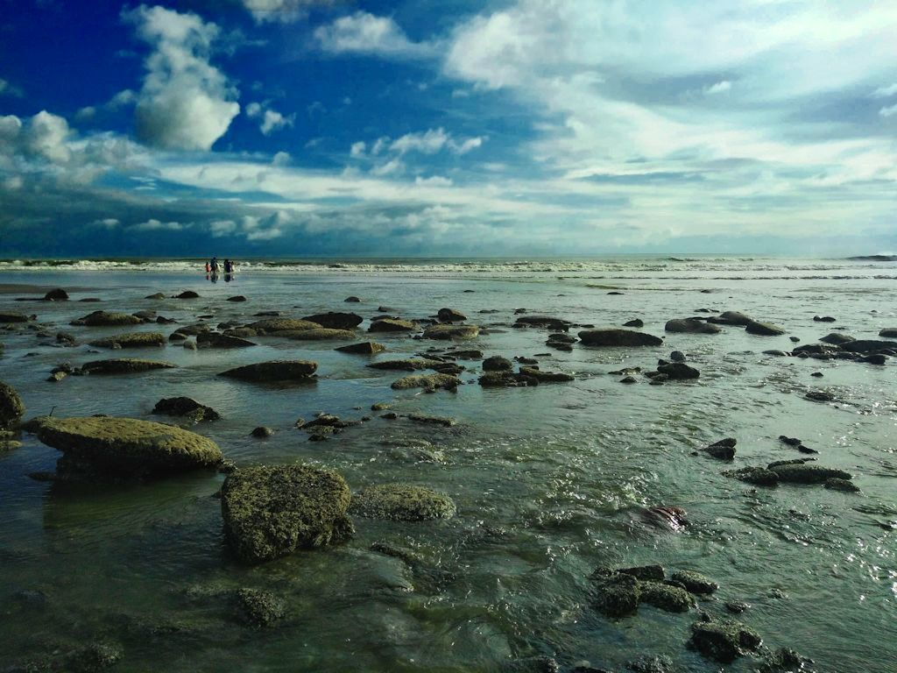
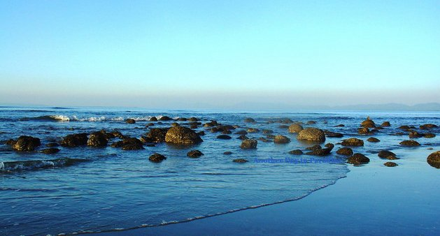
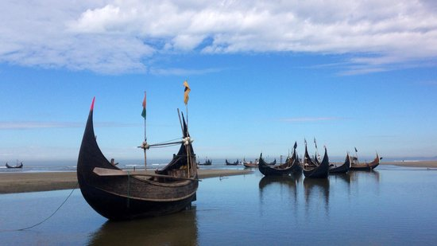

Inani Beach (also Enani Beach) is a sea beach in Ukhia Upazila of Cox’s Bazar District, about 18 kilometers long. It has a nice view and has lots of coral stones. These coral stones take on a green shade during the summer & in the rainy season.
It is a very beautiful beach known for its rock and coral boulders. The Hills can be seen from one side and sea on the other which makes it really impressive. The view of sunrise and sunset of this beach are very memorable. The blue water and the lines of stones is the main source of attraction for the tourists. The clean blue & shark free water is ideal for bathing and swimming without any fear.
The water stored in between stones contain small sea-fish, crabs, snail, and many more. These will keep you busy for all day long. Most tourists choose this place for its silent nature and eccentric environment. Inani beach is famous for its crystal clear water at the beach. Finally, don’t forget to enjoy the sunset at the beach. Try to stay until the sun goes down.
From Cox’s Bazar you can reach Inani beach by rickshaw or CNG auto rickshaw.
To get here, take a bus to Teknaf and get off at Court Bazar (30 km), a tiny village 2 km before Ukhia. From there, you can rickshaw or tempo west to the beach, 10 km away. If you’re headed for the guesthouse, ask the rickshaw driver to let you off at the tiny village of Sonarpara. From there, walk south until you reach the guesthouse. Alternatively, hire a CNG scooter/jeep from Cox’s Bazar to take you directly to Inani using the scenic beach route.
One can hire a CNG scooter for 5–6 hours at a cost of 500 tk . A CNG scooter offers you a package inclusive Doria nogor, Himchhori and Inani beach. You can go there and can stay 1hr at every spot. After finishing visiting one will be returned so.
If you visit this district, you can buy many local products from Burmese Market for example the hand made products for household works, cloths made from local hand-loom are famous over the country.
Attractions:
1. Backdrop of lush green hills rising on the east.
2. The sea stretching out endless to the west.
3. Unusual shaped rock and coral boulders scattered lavishly in the beach and through the sea.
4. Fringed with tall palm trees swaying gently in the breeze
5. Seashells of different colors, shapes, and sizes are found along here.
6. Calm lagoon which is wonderful for the little ones to paddle in.
7. Getting on the rock & coral boulders with the waves washing up on the shore around you, will be an extremely therapeutic experience .
8. Getting on the rock & coral boulders with the waves washing up on the shore around you, will be an extremely therapeutic experience.
9. Beach combing.
10. You can go for a swim or bath in this shark free beach.
There are some photographers taking photos with their traditional camera. They also take photos of people who have a camera but don’t have someone to take photos for them. They will charge you some money.